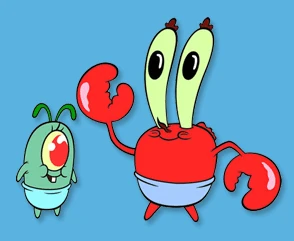
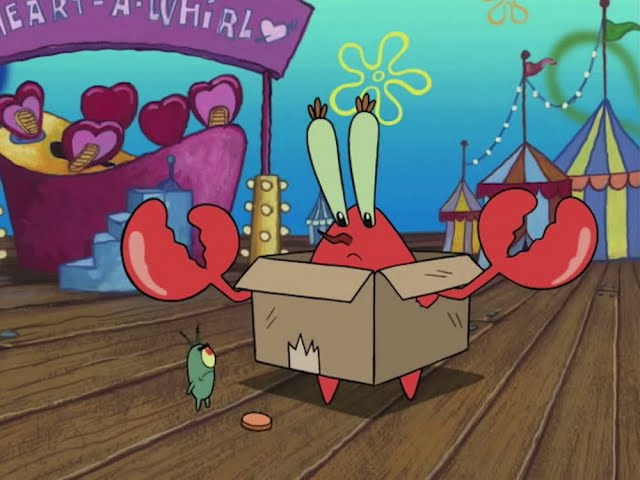
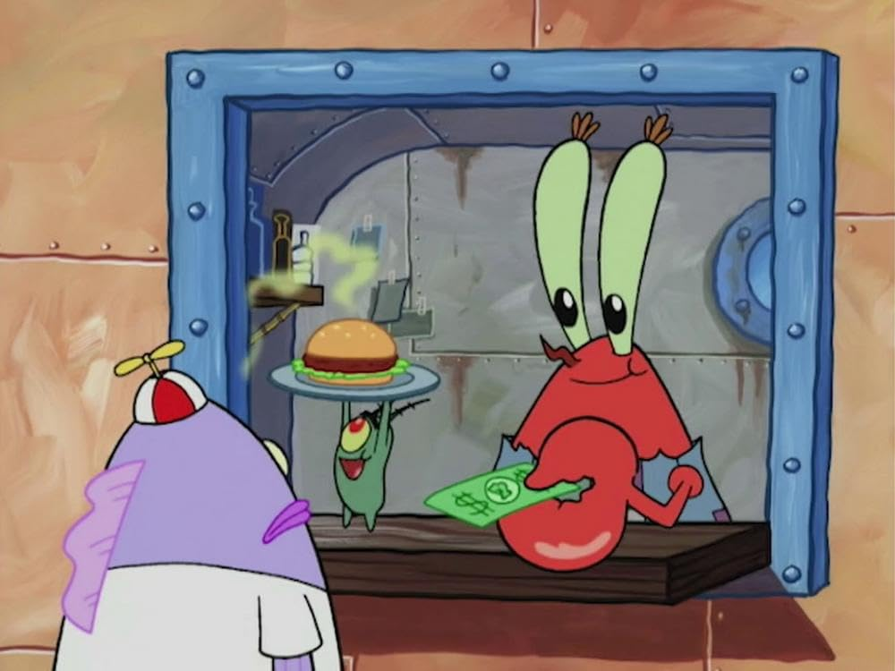
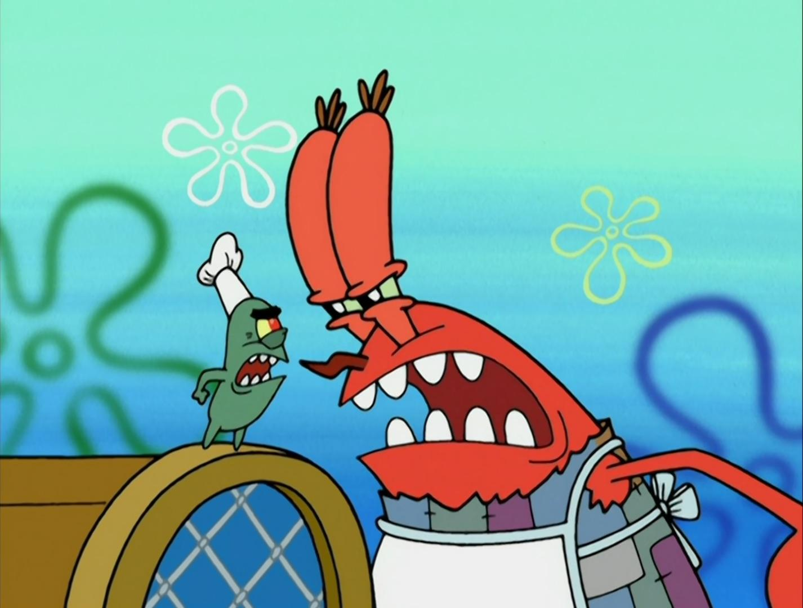

We've all heard of the feud of Mr. Krabs and Plankton. Mr. Krabs works at the extremely successful Krusty Krab,
and Plankton works at the much less successful Chum Bucket. They're sworn enemies, but were they always this way?
From their earliest memories, Plankton and Mr. Krabs were best friends. They spent time together in their nursery,
with Plankton even spending time sitting on the mobile swinging above Mr. Krabs's crib. As they grew up, they continued
to be best friends. Throughout school, they were relentlessly bullied. Plankton was too smart, and Mr. Krabs was too poor.
But they had each other.

One day, as Plankton and Mr. Krabs went to the carnival, Mr. Krabs met the love of his life--money. He saw a penny.
He used this penny to buy a balloon for his dear best friend Plankton (Who flew into the sky after grabbing the helium balloon,
but he was okay).

Things began to take a turn one day at a burger shop named Stinky Burgers. All of the kids loved Stinky burgers.
Mr. Krabs and Plankton decided to grab a bite to eat at Stinky, but sadly found their joy being cut short. Stinky called them
"penniless losers" and refused them service. Ultimately, they decided to strategize. They realized that Stinky had gained the
respect of the children by selling burgers, so they should do the same.
After this incident, Mr. Krabs and Plankton worked tirelessly to perfect a burger recipe. After many long days and nights, they
finally created what they thought to be the perfect burger. They walked to Stinky Burger to brag, only to discover Stinky had been
shut down by the health department. This was great! They decided to use Stinky's old shop to open their own burger joint.
In the dump.

Business was terrible. Finally, they had one customer--Old Man Jenkins. They were elated and gave him him their first burger to try.
Unfortunately, Old Man Jenkins fell to the floor. He was poisoned by the terrible burger. Word got out, and business stayed terrible.
Because of this, Mr. Krabs and Plankton had their first argument. They fought over the recipe and both tried to
get their hands on it, eventually tearing it in half. Plankton ran out and slammed the door shut, which caused random
ingredients to fall off the shelf and into their food. Mr. Krabs tried the new ingredients and was elated. He had stumbled upon
the true perfect krabby patty. The Krabby Patty recipe was born.

Thus, the friendship between Mr. Krabs and Plankton died, and their feud was born. Plankton vowed to steal the secret
krabby patty recipe ever since, and Mr. Krabs vowed to never return back to his poor lifestyle.